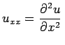
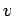

Inhalt Index DeskTop Bronstein

 Differentialgleichungen Partielle Differentialgleichungen Nichtlineare partielle Differentialgleichungen, Solitonen Physikalisch-mathematische Problemstellung
Differentialgleichungen Partielle Differentialgleichungen Nichtlineare partielle Differentialgleichungen, Solitonen Physikalisch-mathematische Problemstellung


Solitonen -- man spricht auch von solitären Wellen -- sind physikalisch betrachtet impuls- oder auch stufenförmig lokalisierte Störungen eines nichtlinearen Mediums oder Feldes; die betreffende Energie ist auf ein enges Gebiet konzentriert. Sie treten auf:
Mathematisch betrachtet, sind Solitonen spezielle Lösungen bestimmter nichtlinearer partieller Differentialgleichungen, die in Physik, Technik und angewandter Mathematik auftreten. Ihre Besonderheiten bestehen darin, daß sie konservativ sind (es fehlt jegliche Dissipation) sowie vollständig integrabel. Die nichtlinearen Terme können nicht störungstheoretisch behandelt werden. Eine Lösungsmethode ist die Spektraltransformation.
Wichtige Beispiele für Gleichungen mit Solitonenlösungen sind:
Mit x bzw. t als Index werden partielle Ableitungen bezeichnet, z.B. . In diesen Gleichungen wird der eindimensionale Fall betrachtet, d.h., es gilt u =u(x,t), wobei x die Ortskoordinate und t die Zeit repräsentieren. Die Gleichungen sind in skalierter Form angegeben, d.h., die beiden unabhängigen Variablen x und t sind hier dimensionslose Größen. Bei praktischen Anwendungen sind sie mit den für das jeweilige Problem charakteristischen, dimensionsbehafteten Größen (Länge und Zeit) zu multiplizieren. Analoges gilt für die Geschwindigkeit .